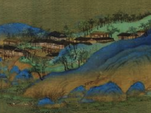

Six colors sampled from the scroll (your crop + the hero band). Nothing applied to the site yet.

The blues are azurite (石青), the greens malachite (石绿) — the two mineral pigments the scroll is famous for, sitting on gold-toned silk. Sampled as real pixel values, then curated to six usable tones.
#4a5d3a current accent (moss)#4c5d2f malachite deep — a near-twin, so the painting already harmonizes#2f5b84 azurite bright — the one genuinely new hue the scroll would add